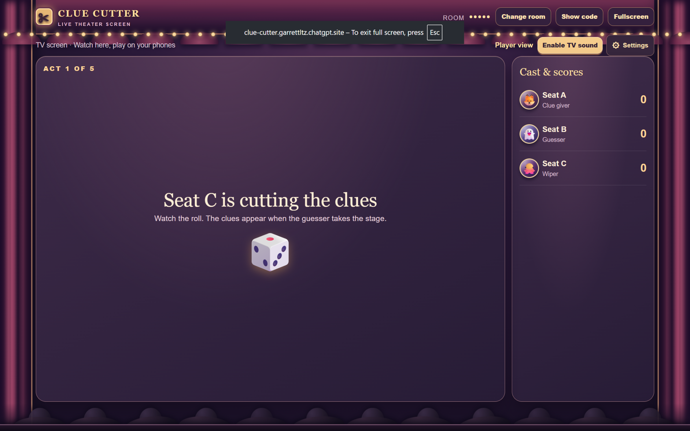
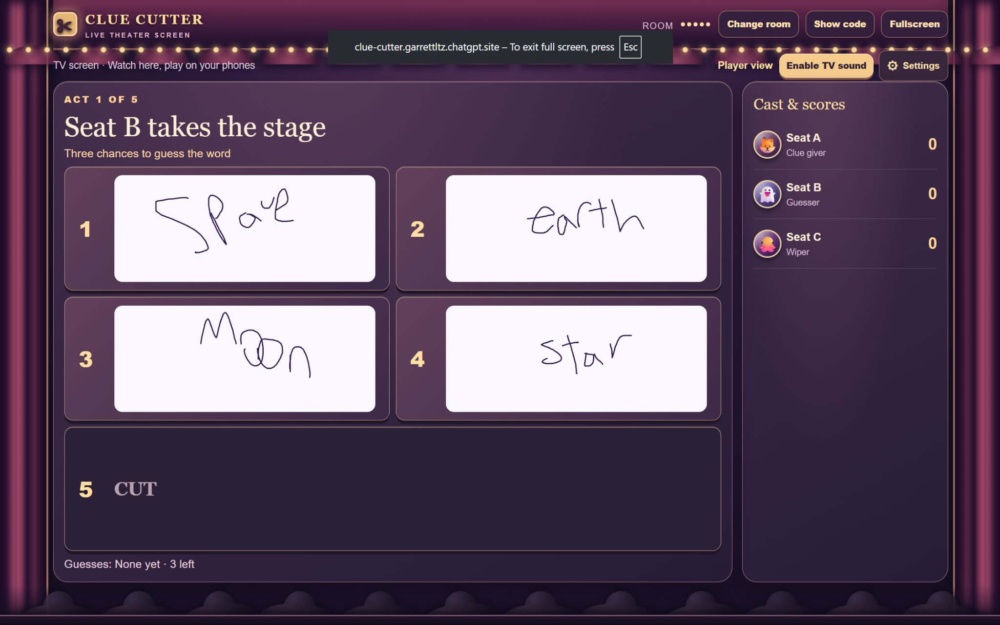
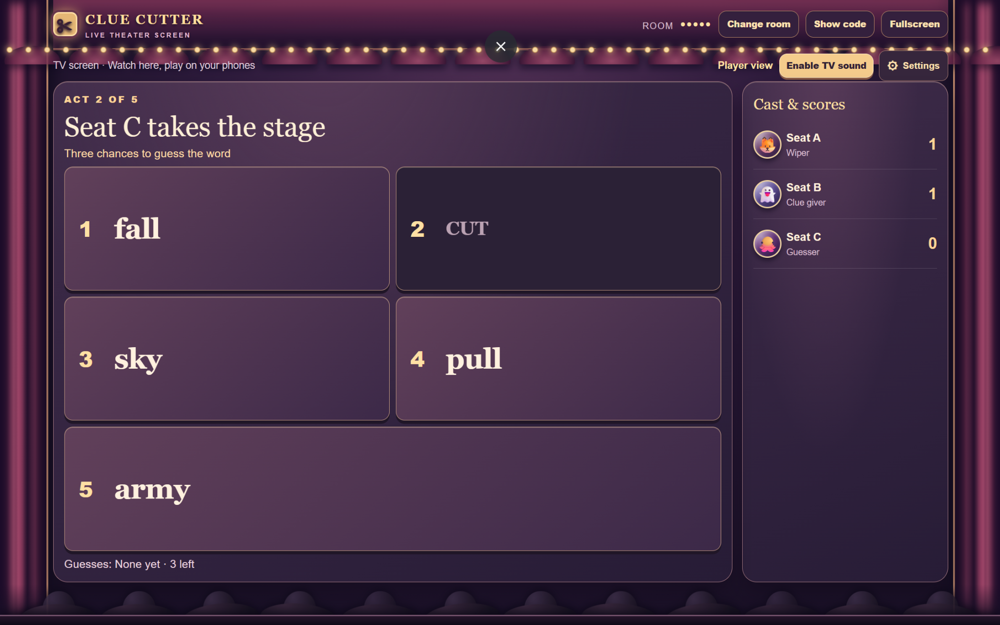
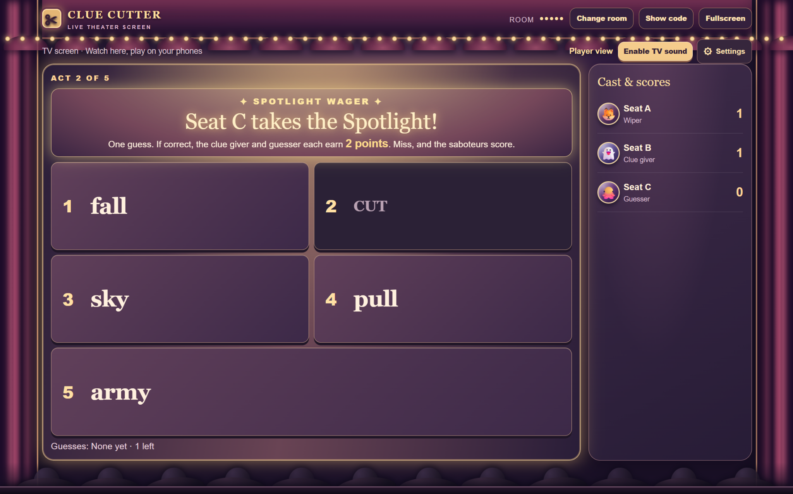
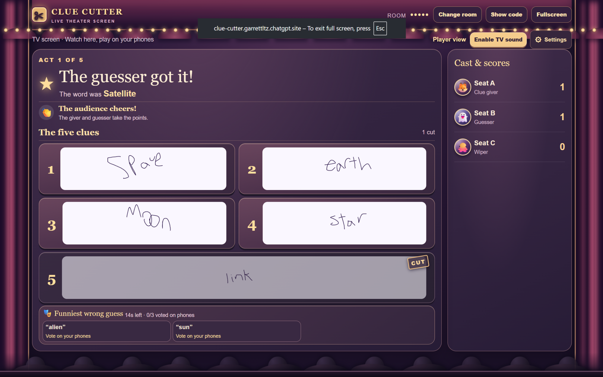

AI-Assisted Multiplayer Game Development
Clue Cutter
A puppet-theater party game for 2–6 players built around creating clues, cutting them away, and trying to guess the hidden word. Players join from their phones while a shared TV display follows the action.
Project Overview
A multiplayer word game built for phones and TV
Clue Cutter is a multiplayer party game for 2–6 players. During a round, one player creates five clues for a hidden word. A rival player—or Pip, the game's mascot—rolls to cut some of those clues away before another player attempts to guess the answer.
Friends can join using a room code or QR code from their phones, while a larger TV or desktop display presents the game to the group. The game supports multiple rounds, scoring, player roles, audience reactions, and players rejoining after disconnecting.
Gameplay
Cutting the Clues

Before the guessing phase, the designated wiper rolls to determine how many clues will be removed. The surviving clues are then revealed to the guesser.
Input System
Handwritten Clues

Players can draw clues using a mouse or finger instead of relying entirely on typed text. Supporting touch input made it possible for phones to function as game controllers while the TV acts as the shared stage.
Guessing
Working With Limited Information

Once clues have been cut, the guesser has limited attempts to identify the hidden word. Removing clues creates uncertainty while still leaving enough information for players to make connections.
Special Mechanic
Spotlight Wager

The Spotlight Wager raises the stakes by giving the guesser a single attempt for increased points. The special round uses its own visual treatment to make the moment feel different from a normal turn.
Results
Scoring and Audience Reactions

At the end of a round, the TV display shows the result, updated scores, surviving clues, and audience reactions. Players can also vote on funny incorrect guesses from their phones.
Development
AI-Assisted Workflow
Clue Cutter was developed using an AI-assisted workflow. I used ChatGPT to help prototype and implement features while I directed the game's concept, mechanics, interface, testing, and iterative development.
I repeatedly tested the game across different screen sizes, identified problems, refined requirements, and adjusted features based on how the game behaved on phones and desktop displays.
Challenges
Multiplayer State and Mobile Input
Some of the most challenging parts of the project were keeping multiple devices synchronized and making finger drawing feel smooth on mobile devices.
Supporting reconnection also required preserving shared game state so players could return to an active session without disrupting the rest of the group.
What I Learned
From Idea to Playable Multiplayer Game
Building Clue Cutter gave me experience thinking through shared game state, reconnect behavior, responsive interfaces, touch input, and multiplayer interaction.
It also taught me how to work with AI as a development tool by translating ideas into specific requirements, testing the results, identifying problems, and iterating until the experience behaved the way I intended.
Next Steps
Playtesting and Refinement
My next step is to playtest Clue Cutter with a larger group and use that feedback to refine the pacing, interface, and overall gameplay flow.